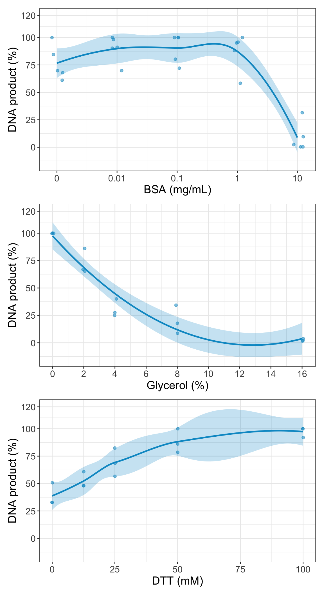

This data analysis is preliminar and will be soon published in a manuscript authored by Carlos D. Ordóñez, Conceçao Egas and Modesto Redrejo-Rodríguez. The GitHub repo contains the original result files from all the analyses. Raw reads will be available in a suitable repository along with the manuscript.
Data is shared under creative common license (CC BY-NC-ND 3.0 ES). Contact modesto.redrejo@uam.es for further info.
2 Input sample
The input DNA to be amplified is a mock metagenome made up of equal mass of purified genomes from 4 different bacteria, spanning Gram+ and Gram- species, and genomes with high and low GC, as detailed in the Table 11. Note that the used reference genomes were selected later on, using top hits of Blast searches performed the longest contigs from each assembly as query.
Show the code
# Define color palette for the whole report to facilitate future modificationscolorines <-c(`NA`="grey", NA2 ="grey", `RP-MDA`="palegreen4", `RP-MDA2`="palegreen4",`PrimPol-MDA`="orangered4", piPolB ="gold", `piPolB+D`="darkgoldenrod1", piMDA ="deepskyblue3",piMDA2 ="deepskyblue3", `piMDA+D`="blue4", `piMDA+D2`="blue4", `B. subtilis`="orange2",`E. coli`="gold1", `K. rhizophila`="skyblue1", `P. aeruginosa`="slateblue2")# load datasamples <-read.table("amplification_yield/input_sample.csv", header =TRUE, sep =";")names(samples) =c("Strain", "Model strain", "Reference genome", "Length (MB)", "GC content")kbl(samples, align ="c", caption ="Table 1. Composition of the amplified mock-metagenome") %>%kable_styling(bootstrap_options ="striped", full_width = F, position ="center") %>%column_spec(1, italic = T)
Table 1. Composition of the amplified mock-metagenome
Strain
Model strain
Reference genome
Length (MB)
GC content
E.coli
E. coli K12 MG1655
NC_000913.3
4.64
50.79
B. subtilis 110NA
B. subtilis 168
NC_000964.3
4.21
43.51
P. aeruginosa
P. aeruginosa PAO1
NC_002516.2
6.50
66.37
Micrococcus luteus
K. rhizophila ATCC 9341
NC_010617.1
2.70
70.56
Show the code
# %>% save_kable('figures/samples.pdf')
3 DNA amplification assays (MDA)
DNA amplification was carried out by six different protocols. (1) Random-primer hexamers-based MDA (RP-MDA) was carried out with REPLIg (Qiagen) and (2) TruePrime (4basebio) was used for a control primer-less MDA (PrimPol-MDA). In both cases, amplification protocols followed the manufacturer’s instructions, including the routine alkaline denaturation step. Recombinant piPolB (Redrejo-Rodríguez et al. 2017) was used for a single-enzyme, primer-free DNA amplification in a single step MDA protocol (3) or an alternative protocol (4) with a previous alkaline denaturation step (piPolB+D). Finally, a new method based on the combination of piPolB and Φ29 DNA polymerases was developed. Two alternative protocols were used, (5) a single-step primer-independent MDA (piMDA) and a modification (6) with a previous alkaline denaturation of input DNA (piMDA+D).
Amplification yield was assessed by absolute measure of DNA amplification product was performed by fluorescence quantitation of dilutions from each sample (triplicates) with the AccuBlue High Sensitivity dsDNA Quantitation Kit (Biotum, #31006) using a FLUOstar Omega (BMG Labtech) fluorimeter. AccuBlue High Sensitivity dsDNA Standards (Biotum, #31006C) were used to do the range standard curve in each experiment.
3.1 Buffer optimization
Some chemicals or biomolecules have been reported to enhance DNA polymerase proficiency and amplification yield, such as salts, reducing agents, BSA, or glycerol, among others (Gao et al. 2019, Jan and Kim, 2022). In our study, we decided to assess the effect of DTT, BSA and glycerol on the piMDA protocol.
`geom_smooth()` using method = 'loess' and formula = 'y ~ x'
`geom_smooth()` using formula = 'y ~ x'
`geom_smooth()` using method = 'loess' and formula = 'y ~ x'

Figure 1. Optimization of piMDA buffer components.
The presence of BSA does not affect the yield of the amplification up to 1 mg/mL. However, BSA is being highly inhibitory at high concentration, likewise increasing concentration of glycerol. Surprisingly, DTT results strongly stimulatory, an effect that seems generalized for reducing agents (see Carlos PhD’s Thesis).
External Figure 1. Effect of different reducing agents on piPolB-MDA assays.
We plot first the DNA input vs. the product yield for the four methods.
Show the code
p <-ggplot(free, aes(x =as.factor(ROWTITLE), y = value, color = variable, fill = variable,alpha =0.12)) +geom_boxplot() +scale_y_continuous(limits =c(0, 30), expand =c(0, 0)) +guides(alpha ="none", color ="none") +geom_point(pch =21, position =position_jitterdodge(),alpha =0.5) +facet_grid(~variable) +theme_bw() +theme(text =element_text(size =15)) +xlab("Input DNA (ng)") +ylab("DNA product (µg)") +labs(fill ="MDA protocol") +scale_fill_manual(values = colorines[c(3,5, 8, 10)]) +scale_color_manual(values = colorines)ggplotly(p)
Figure 2. DNA amplification yield comparison. All reactions were carried out in 50 µL and incubated at 30ºC for 3 h, except those of RP-MDA protocol that were incubated for 16 h. Shown are results from 4 independent experiments.
In order to analyze statistically the differences among samples, we will first test normality and homogeneous variance to decide if we should use parametric tests. As shown below, the p-values <0.05 indicate that data are not suitable for parametric tests, leading us to the use of non-parametric pairwise Wilcox comparisons.
Show the code
# statistics comparison of yield/inputres_aov <-aov(value/ROWTITLE ~ variable, data = free)shapiro.test(res_aov$residuals) #normality test
Shapiro-Wilk normality test
data: res_aov$residuals
W = 0.90279, p-value = 1.6e-05
Show the code
leveneTest(value/ROWTITLE ~ variable, data = free) #NO homogeneus variance
Levene's Test for Homogeneity of Variance (center = median)
Df F value Pr(>F)
group 3 5.6983 0.001423 **
76
---
Signif. codes: 0 '***' 0.001 '**' 0.01 '*' 0.05 '.' 0.1 ' ' 1
Show the code
kruskal.test((free$value/free$ROWTITLE), free$variable, paired =FALSE, p.adjust.method ="BH") #non-parametric multiple groups comparison
Kruskal-Wallis rank sum test
data: (free$value/free$ROWTITLE) and free$variable
Kruskal-Wallis chi-squared = 15.869, df = 3, p-value = 0.001207
Pairwise comparisons using Wilcoxon rank sum exact test
data: (free$value/free$ROWTITLE) and free$variable
RP-MDA PrimPol-MDA piMDA
PrimPol-MDA 0.03348 - -
piMDA 0.44496 0.00031 -
piMDA+D 0.18105 0.44496 0.01843
P value adjustment method: BH
Statistical analysis indicate that yield differences among MDA methods are statistically significant, particularly the piMDA+D protocol respect to RP-MDA and piPolB. Let’s see about time-course experiments:
Figure 3. DNA amplification time-course. All the amplification assays contained 10 ng of input DNA sample. Shown is the total DNA product in 50 µL reactions. Amplification yield from 2-4 experiments are shown.
Table 2. P-value of pairwise comparison of time course assays
RP-MDA
PrimPol-MDA
piPolB
piPolB+D
piMDA
PrimPol-MDA
0.0003
piPolB
0.1850
0.0004
piPolB+D
1.0000
0.3112
0.1483
piMDA
0.1370
0.1483
0.0156
0.6127
piMDA+D
0.0003
0.0730
0.0004
0.0411
0.0196
These results show that the piMDA method is comparable with other MDA alternatives in terms of sensitivity and DNA production. Moreover, its yield can be increased with the addition of a DNA denaturation step, obtaining statistically significant more amount of DNA per time unit than all the other protocols, except PrimPol-MDA.
It should be also considered that these results apply specifically to this particular sample, and the reduced yield of RP-MDA respect to the other methods is likely by the presence of high GC content sequences, as discussed below.
4 Illumina raw data processing
Samples from independent amplification experiments, as well as the control non-amplified metagenome (NA), were sequenced by Illumina NextSeq V2.5 High Output, 2x75 bp paired ends sequencing. To reduce the sequencing-derived bias, the sequencing libraries were prepared using TruSeq DNA PCR-Free Low Throughput Library Prep kit (Illumina), at Conceição Egas’ lab (GENOINSEQ - BIOCANT, Portugal). As shown below, NA, RP-MDA, piMDA and piMDA+D were sequenced from duplicated independent experiments.
4.1 QC stats and trimming
The raw files were first analyzed for basic statistics with Seqkit v.2.3 (Table 3).
Show the code
samples <-read.table("qc/raw_stats.csv", header =TRUE, sep =";", na.strings ="")for (i in1:nrow(samples)) { samples$file[i] <-gsub("freeDNA_data/", "", samples$file[i])}kbl(samples, align ="c", caption ="Table 3. Stats of raw Illumina data") %>%kable_styling(bootstrap_options ="striped", full_width = F, position ="center") %>%column_spec(1, bold = T)
Table 3. Stats of raw Illumina data
Sample
file
format
type
num_seqs
sum_len
min_len
avg_len
piMDA+D2
A2_R1.fastq.gz
FASTQ
DNA
81,578,075
6,172,839,185
35
75.7
piMDA+D2
A2_R2.fastq.gz
FASTQ
DNA
81,578,075
6,172,767,989
35
75.7
piMDA2
B2_R1.fastq.gz
FASTQ
DNA
75,890,757
5,742,701,890
35
75.7
piMDA2
B2_R2.fastq.gz
FASTQ
DNA
75,890,757
5,742,589,467
35
75.7
Primpol-MDA
C3_R1.fastq.gz
FASTQ
DNA
57,026,214
4,309,432,584
35
75.6
Primpol-MDA
C3_R2.fastq.gz
FASTQ
DNA
57,026,214
4,309,441,640
35
75.6
NA2
Ctrl2_R1.fastq.gz
FASTQ
DNA
76,474,759
5,784,350,652
35
75.6
NA2
Ctrl2_R2.fastq.gz
FASTQ
DNA
76,474,759
5,784,333,531
35
75.6
NA2
Ctrl_R1.fastq.gz
FASTQ
DNA
71,838,581
5,432,947,576
35
75.6
NA2
Ctrl_R2.fastq.gz
FASTQ
DNA
71,838,581
5,432,944,267
35
75.6
RP-MDA
D3_R1.fastq.gz
FASTQ
DNA
67,415,579
5,093,810,770
35
75.6
RP-MDA
D3_R2.fastq.gz
FASTQ
DNA
67,415,579
5,093,837,342
35
75.6
piPolB+D
F2_R1.fastq.gz
FASTQ
DNA
69,333,871
5,181,529,472
35
74.7
piPolB+D
F2_R2.fastq.gz
FASTQ
DNA
69,333,871
5,188,090,985
35
74.8
piPolB
N1_R1.fastq.gz
FASTQ
DNA
66,003,225
4,946,827,786
35
74.9
piPolB
N1_R2.fastq.gz
FASTQ
DNA
66,003,225
4,953,211,772
35
75.0
piMDA
N2_R1.fastq.gz
FASTQ
DNA
69,872,142
5,287,166,316
35
75.7
piMDA
N2_R2.fastq.gz
FASTQ
DNA
69,872,142
5,287,208,173
35
75.7
RP-MDA
N4_R1.fastq.gz
FASTQ
DNA
66,722,442
5,040,940,307
35
75.6
RP-MDA
N4_R2.fastq.gz
FASTQ
DNA
66,722,442
5,041,277,271
35
75.6
piMDA+D
N6_R1.fastq.gz
FASTQ
DNA
64,762,150
4,901,577,518
35
75.7
piMDA+D
N6_R2.fastq.gz
FASTQ
DNA
64,762,150
4,901,629,402
35
75.7
Then, a detailed quality check (QC) was performed with FastQC v0.11.9 for each sample, and reports aggregated with MultiQC 1.11. Reads were subsequently trimmed with Trimmomatic 0.39, using a customized script, based on I-Shell-Do-This Github Repo (parameters: LEADING:3 TRAILING:3 SLIDINGWINDOW:4:20 MINLEN:35). A post-trimming QC report was obtained as above. Due to size limitations, Trimmomatic output files are not available in this repository, they’ll be deposited along with the raw reads. Individual QC reports as well as MultiQC-merged reports before and after Trimmomatic are available in the qc folder of the GitHub repository. We include in Figures 4-6 some of the QC results. First, we will have a look to the duplication level of the reads, which is a good indicative of overamplification of some sequences, a common bias source in exponential DNA amplification.
Figure 4. Reads duplication level before (top) and after (bottom) trimming
Random-primer based MDA (RP-MDA) gave rise to a higher level of duplicated reads than PrimPol-MDA and both piMDA protocols. That suggests a greater level of overamplification of the same sequences. The piPolB solo MDA gave rise to a great level of highly duplicated reads, many of them removed after trimming. However, these overrepresented reads might be of interest as they could represent regions of favored initiation (i.e. DNA priming) events.
Quality filtering of the samples show that piPolB and piPolB+D samples contain lower quality reads, with less paired reads survival and more dropped reads. Also (Table 4), as expected only-forward survival reads were more (15,89% and 26,41%, respectively) than only-reverse reads (9,06% and 11,12%, respectively). This results indicate a possible library prep or sequencing problem that hinders the analysis of those samples, likely due to the hyperbranched structure of the piPolB-synthesized DNA.
4.2 Reads per GC content
DNA amplification as well as library generation and the sequencing itself may give rise to uneven or poor sequence coverage of GC-poor or rich sequences (see for instance Marine et al. 2014, Jamal et al. 2021, Benjamini et al. 2022). Thus, the ideal MDA method should reflex the real GC pattern of the sample or at least do not neglect DNA sequences with extreme GC composition. GC-bias will be analyzed also in terms of impact on the assembly, but this preliminar analysis is also very informative from a general point of view.
Warning: Using `size` aesthetic for lines was deprecated in ggplot2 3.4.0.
ℹ Please use `linewidth` instead.
Show the code
p <- p +guides(color =guide_legend(ncol =2))# ggsave('figures/gc_profile.svg', p, width=9,heigh=5)# And the post-trimming plot add the average GC%post_gc_table$p <- post_gc_table$X..GC * post_gc_table$valuegc_sample <-by(post_gc_table$p, INDICES = post_gc_table$variable, FUN = mean)leyenda <-c()for (i in1:length(levels(as.factor(post_gc_table$variable)))) { leyenda[i] <-paste0(levels(as.factor(post_gc_table$variable))[i], " (", round(gc_sample[i],1), "%)")}q <-ggplot(post_gc_table, aes(x = X..GC, y = value, colour = variable, fill = variable, label = variable)) +scale_color_manual(values =rep(unname(colorines[c(1, 2, 8, 9, 10, 11, 6, 7, 5, 3, 4)]),each =4), labels = leyenda) +geom_path(linejoin ="round", size =1) +theme_bw() +theme(text =element_text(size =15)) +ggtitle("GC content per sample (post-trimming)") +xlab("GC") +ylab("Reads (%)") +labs(color ="Sample (Average GC %)") +guides(color =guide_legend(ncol =2)) +theme(text =element_text(size =17), legend.text =element_text(size =9, face ="bold"),legend.key.height =unit(0.4, "cm"))# ggsave('figures/gc_profile_post.svg', q, width=12,heigh=6)p/q
Figure 6. Reads’ GC content plot. GC content is indicated in the plot leyend for the post-trimming reads
As shown in Figure 6, the control non-amplified (NA) samples show a bimodal curve respect to the GC content, in agreement with the selection of the species in the mock-metagenome (see Disclaimer and Table 1). None of the MDA protocols achieve a similar curve. The samples from RP-MDA and Primpol-MDA show a similar curve, centered in ~44% and ~48% GC content, respectively, and very few reads (<1%) in regions of GC content above 60%.
The piPolB protocols show a slim peak of about 10% of reads around 40-45% GC that increases to ~47% in the piPolB+D protocol, although it also shows a “shoulder” at 38-40%. Given the limited processivity of piPolB, this pattern suggests that low GC content DNA sequences facilitate DNA priming by piPolB.
On the contrary, the piMDA and piMDA+D methods gave rise to a peak around 68-70% GC, although the raise of the curve is very slow with a good number of reads in the range of the first peak of the NA samples, reaching a 1% at GC content of 40%. Thus, piMDA protocols provide most of their reads of higher GC-content sequences, but that bias is less severe than in the case of the other MDA methods, which centered on 40-50% GC content and seem to neglect high GC sequences.
4.3 Metagenomes profiling
Metagenomes profiling is usually the first approach to measure alpha diversity. In our case, profiling prior to assembly can be very useful to detect contamination. In this case, the trimmed reads were profiled using Metaphlan v.4.0.0 installed via Conda. Note that we used the --unclassified_estimation to include the estimation of genomic sequences not identified in the database.
Figure 7. Metagenomic samples reads profiling of amplified DNA by different MDA protocols. Note that both plots show the same data, with different representation
As shown in Figure 7, the amount of unknown (or junk) DNA is very high in piPolB samples, particularly without denaturation step, but not in piMDA. However, in any of the samples we detected sequences from other organisms than the expected bacteria, downplaying the presence of contaminant DNA. This suggest that, rather than contaminant DNA, piPolB might be performing ab initio DNA synthesis.
Show the code
res_aov <-aov(value ~ variable, data = meta2)shapiro.test(res_aov$residuals) #normality test
Shapiro-Wilk normality test
data: res_aov$residuals
W = 0.80281, p-value = 3.944e-07
Show the code
leveneTest(value ~ variable, data = meta2) #homogeneus variance
Levene's Test for Homogeneity of Variance (center = median)
Df F value Pr(>F)
group 10 0.1652 0.9978
44
Show the code
kruskal.test(value ~ variable, data = meta2)
Kruskal-Wallis rank sum test
data: value by variable
Kruskal-Wallis chi-squared = 3.7369, df = 10, p-value = 0.9584
Although due to the limited number of samples, the differences are not statistically significant, we represent these results as an interactive heatmap.
Figure 8. Clustering of samples by the metagenomic profiling results
Interestingly, in terms of relative representativity of reads from each reference genome, both NA samples cluster with the piMDA/piMDA+D amplification products. As mentioned above, we found an increased amount of unknown reads in the piPolB(+D) samples. As samples have been quality-trimmed, we only can suggest that those sequences arose from ab initio DNA synthesis.
On the other hand, RP-MDA and PrimPol-MDA contain an overrepresentation of B. subtilis reads, as compared with the NA reads. The piMDA amplified samples, particularly the piMDA+D reads form the first experiment, show a moderate overrepresentation of high GC sequences (K. rhizophyla), in agreement with the GC content profile of these samples (see Figure 6).
5 Assembly-independent coverage of reference genomes
5.1 Reference genomes breadth and coverage
Reads were mapped against the reference genomes with Bowtie2 v2.3.5.1 and further analyzed with Weesam v1.6 and Alfred v0.1.16. The Weesam reports can be accessed in a merged webpage. Alfred reports are accesible as a csvtable. Mean values per sample are shown below in Table 5.
Show the code
# WeeSam html files were merged by copy/paste from the source file by hand and then# exported into csvweesam <-read.table("weeSam/weesam_merged.csv", header =TRUE, na.strings ="", sep =";")# change namesweesam <-data.frame(lapply(weesam, function(x) {gsub("RepliG", "RP-MDA", x)}))weesam <-data.frame(lapply(weesam, function(x) {gsub("TruePrime", "PrimPol-MDA", x)}))# fix variable typesweesam$Bam_File <-factor(weesam$Bam_File, levels =c("NA", "RP-MDA", "PrimPol-MDA", "piPolB","piPolB+D", "piMDA", "piMDA+D"))weesam <- weesam %>%mutate(across(c(Ref_Genome, Ref_Name), as.factor))weesam <- weesam %>%mutate(across(c(Avg_Depth, Experiment, Mapped_Reads, Breadth, Std_Dev, Variation_Coefficient, covered), as.numeric))# add Bowtie2 overall alignment rate valuesBam_File <-c("NA", "NA", "RP-MDA", "RP-MDA", "PrimPol-MDA", "piPolB", "piPolB+D", "piMDA","piMDA", "piMDA+D", "piMDA+D")alignment <-c(97.85, 97.99, 99.31, 99.24, 99.25, 7.67, 73.15, 94.22, 93.76, 97.68, 97.18)bowtie <-data.frame(Bam_File, alignment)weesam <-merge(weesam, bowtie, by ="Bam_File")
Among the different parameters that WeeSAM provide, we are going to represent the Alignment Rate, Breadth, Coverage and the Variation Coeficient (Figures 9 and 10). The overall alignment rate is clearly better using selected reference genomes than in the profiling with a reference database (Figures 7 & 8). However, piPolB and piPolB+D samples still show lower alignment rates, suggesting unfaithful DNA amplification (see below).
Breadth and Coverage are good general indicators of very poor amplification of some of the sequences, usually with extreme high or low GC content. On the other hand, the Variation Coeficient indicates variability in coverage. A coefficient of variation < 1 would suggest that the coverage has low-variance, which is good, while a coefficient > 1 would be considered high-variance.
# version to export ggsave('figures/depth_plot.svg',grid,width=12,height=12)
The samples of RP-MDA and, to a lesser extent the PrimPol-MDA, show a clear decrease in the sequences of high GC in the profiling (Figures 7 & 8). In agreement with that, they show lower coverage and breadth and higher variation coefficient than all the other samples for those species and higher depth for B. subtilis and E. coli. Interestingly, the piMDA and piMDA+D reads contain a somewhat higher coverage for high GC genomes but lower for B. subtilis and E. coli. In the case of the samples from the piMDA protocol, this lower coverage depth of moderate GC genomes is consequence of a lower alignment rate and it is also in agreement with a higher variation coefficient in the case of B. subtilis, although the coverage depth for this genome is the same for all the samples.
In conclusion, the RP-MDA and, to a lesser extent, the PrimPol-MDA amplification methods show a strong bias against very high GC-content sequences and, on the contrary samples from piMDA methods show an overrepresentation of high GC sequences which, in the case of the piMDA protocol (not in the piMDA+D), may give rise to an overall uneven depth.
Another version in a single plot with two axis in the Figure 10 that allow us to see that the very high coverage depth in RP and PrimPol-MDA for intermediate-low GC content genomes correlates with a very high variation coefficient in high GC content genomes, which is not the case for piMDA and specially piMDA+D reads.
Figure 10. Reference genomes coverage depth (left axis) and variation coefficient (small points, right axis) by MDA methods
Show the code
# ggsave('figures/depth.svg',pp,width=8,height=5)
Alfred stats from Bowtie alignment files allowed us to analyze the mismatch rate in the raw reads mapping (Figure 11). Individual merged tables were re-merged using the script merge_alfred_samples.R..
Table 5. Mean mapping and coverage parameters sample.
Sample
Experiment
Mapped reads
Breadth
Reference covered (%)
Average Depth
Variation coefficient
Mismatch Rate (%)
NA
1
33,406,640
4,438,281
98.54
571.22
0.21
0.1077
NA
2
35,680,689
4,440,442
98.58
608.48
0.21
0.1077
RP-MDA
1
31,360,430
4,270,082
93.67
546.25
4.93
1.2791
RP-MDA
2
32,030,479
4,434,691
98.38
549.34
3.12
1.2791
PrimPol-MDA
2
26,951,539
4,440,242
98.58
457.24
0.85
0.3000
piPolB
2
2,009,164
4,381,966
97.51
16.36
31.77
0.2673
piPolB+D
2
16,484,064
4,439,396
98.56
91.06
17.93
0.3443
piMDA
1
30,765,774
4,438,131
98.54
525.24
0.45
0.1137
piMDA
2
33,761,506
4,439,853
98.57
586.57
0.61
0.1137
piMDA+D
1
29,696,732
4,437,996
98.54
572.54
0.38
0.1071
piMDA+D
2
37,756,486
4,440,189
98.58
689.94
0.36
0.1071
Similarly to the previous results, Figures 11 and 12 show that the RP-MDA and, to a lesser extent the PrimPol-MDA protocols gave rise to a higher mismatch rate in the P. aeruginosa and K. rhizophila genomes. This is mostly due to misinsertions and deletions. Thus, in our metagenome sample, the RP-MDA protocol generate an amplification product with uneven coverage breadth and higher mismatch rate for high GC-sequences.
The samples generated by the piPolB and piPolB+D protocols also contain a higher mismatch rate, but in this case, the mistmaches are mostly in the B. subtilis sequences and contain a high rate of insertions.
Interestingly, the piMDA and piMDA+D protocols gave rise to similar mismatch rates than NA samples, only with a minor increase in the insertions in moderate GC genomes, mostly in homopolymeric sequence contexts (as expected).
5.2 Analysis of unclassfied reads
The piPolB and specially piPolB+D samples showed a higher rate of unknown sequences in the profiling (Figure 7) and lower rate of reads mapping against the reference genomes (Figure 9A). After the trimming step, those unmapped reads may correspond either to contaminant amplified DNA or ab initio DNA synthesis (see Zyrina et al. 2013){target=“_blank”}. Since the profiling with Metaphlan only considers mapped reads, as well as our Bowtie2 mapping against the reference, we decided to map the trimmed reads without the –-no-unal option against the Metaphlan database (vJan21), and then extract the unaligned reads an convert to fasta using samtoolsf -4 for further analysis. We used the following bash script:
for sample in A2 B2 F2 C3 D3 Ctrl Ctrl2 N1 N2 N4 N6;
samtools fasta "$sample"_metaphlan_unmapped.sam > "$sample"_metaphlan_unmapped.fasta;rm "$sample"_metaphlan_unmapped.sam;
rm "$sample"_metaphlan_sorted.bam;
done
We then analyzed the presence of low complexity sequences using BBduk (from BBtools) to detect sequences with entropy <0.5. The proportion of filtered low entropy reads was vary low (<0.25%) for all the samples, except for the piPolB-MDA sample (12.58%), supporting the presence of ab initio DNA synthesis (see Zyrina et al., 2014). Moreover, the presence of ab initio DNA synthesis capacity in piPolB could be confirmed in long incubation MDA assays (≥ 9h), as shown in the figure below.
External Figure 2. Ab initio DNA synthesis by piPolB. Time-course experiments were carried out in the standard conditions in the presence of 0, 2 and 20 ng of metagenomic DNA.
5.3 GC content bias
GC content bias of sequenced reads was analyzed in detail with Picard v.2.25.0 (CollectGcBiasMetrics). This allow us to see, for the whole metagenome and for each reference genome, the frequency of sequences at each GC content window (100 bp). All data is available in the folder gc in the GitHub repo.
Note that, contrary to the previous result in Figure 4, the coverage is normalized by the frequency of each GC window in the reference metagenome. According to the Picard definition:
NORMALIZED_COVERAGE is a relative measure of sequence coverage by the reads at a particular GC content. For each run, the corresponding reference sequence is divided into bins or windows based on the percentage of G + C content ranging from 0 - 100%. The percentages of G + C are determined from a defined length of sequence; in this case we used the default value (100 bases).
Therefore, if the reference metagenome have higher number of sequences at a particular GC content, the normalized coverage should be also higher at that GC content value.
5.3.1 GC bias per MDA sample
Data from Picard output was merged to generate a combined plot with homogeneous scale. Original individual data tables are available in the gc folder of the GitHub repository.
Show the code
# load all the files as a list of dataframesgc_picard =c("ctrl", "ctrl2", "N4", "D3", "C3", "N1", "F2", "N2", "B2", "N6", "A2")gc <-lapply(gc_picard, function(x) read.csv2(paste("gc/", x, "_gc_bias_metagenome.txt", sep =""),skip =6, header =TRUE, sep ="\t", colClasses =c("NULL", "NULL", "numeric", "numeric","numeric", "numeric", "numeric", "numeric", "numeric", "numeric", "numeric")))cor_matrix <-data.frame(11, 3)names(gc) <-c("NA", "NA2", "RP-MDA", "RP-MDA2", "PrimPol-MDA", "piPolB", "piPolB+D", "piMDA","piMDA2", "piMDA+D", "piMDA+D2")# create all the plots in a listgc_cov <- gc[[1]][, 1:2]for (i in1:length(gc)) { gc_cov <-cbind(gc_cov, gc[[i]]$NORMALIZED_COVERAGE)}colnames(gc_cov) <-c("GC", "W", "NA", "NA2", "RP-MDA", "RP-MDA2", "PrimPol-MDA", "piPolB","piPolB+D", "piMDA", "piMDA2", "piMDA+D", "piMDA+D2")gc_cov <-as.data.frame(gc_cov)gc_cov_melted <- data.table::melt(gc_cov, id.vars =c("GC", "W"), na.rm =FALSE)colnames(gc_cov_melted) <-c("GC", "W", "Sample", "Nor_cov")# mean GC content of mapped readsgc_mapped <-list()gc_mapped <-lapply(1:length(gc), FUN =function(i) {mean(gc[[i]]$NORMALIZED_COVERAGE[gc[[i]]$NORMALIZED_COVERAGE >0] * gc[[i]]$GC[gc[[i]]$NORMALIZED_COVERAGE >0])})# paste in legendleyenda <-c()for (i in1:length(levels(gc_cov_melted$Sample))) { leyenda[i] <-paste0(levels(gc_cov_melted$Sample)[i], " (", round(gc_mapped[[i]], 1), "%)")}p <-ggplot(gc_cov_melted, aes(x = GC)) +geom_bar(aes(y = W/1e+06), stat ="identity", fill ="steelblue",alpha =0.5) +geom_line(aes(y = Nor_cov, color = Sample), size =1.5) +theme_bw(base_size =14) +scale_y_continuous("Normalized coverage", sec.axis =sec_axis(~. *1e+06, name ="Frequency at GC")) +theme(axis.text.y.right =element_text(colour ="steelblue"), axis.title.y.right =element_text(colour ="steelblue"),axis.line.y.right =element_line(color =rgb(0.275, 0.51, 0.706, 0.55), linewidth =2)) +scale_color_manual(values = colorines[1:11], labels = leyenda) +geom_hline(yintercept =1,linetype ="dashed", color ="black")p
Figure 12. Comparative Normalized coverage by GC distribution of sequence and reads. Sequence coverage (red) is normalized by the GC range frequency in 100 bp windows (blue). The average GC content of each sample mapped reads is also indicated in the leyend
Notwithstanding the difference in the method, this results are overall in agreement with the Figure 2. The control samples show a mild decrease in the coverage at GC values over 50%, with values always near to 1 (right Y axis). However, the normalized coverage of RP-MDA and PrimPol-MDA samples span a wide range at different GC content, with a very high normalized coverage of low GC sequences (>2.5, with peaks up to 4-5) sharply decreasing the coverage for GC content values over 50-60%, down to near negligible coverage. Strikingly, the piPolB and piPolB+D reads show a lower coverage, with some scattered peaks within the range of 30-50%. This may be due to the preference for that GC content in the piPolB initiation events, which would be in agreement with a higher rate of over-represented sequences.
However, the piMDA samples show less variability in the coverage, with a low coverage (around 0.3-0.5) at GC<50 and a strong increase in the coverage at values over 50-60%, up to 1-2. The piMDA and piMDA+D protocols show a very similar profile, although the piMDA+D reaches higher coverage levels for extremely high GC content values( >75%)
5.3.1.1 Statistic comparisons of GC bias
Normality test prompted us to non-parametrics group difference tests. Here we are removing outliers from each genome, using the same criteria: Picard variable WINDOWS that represent the number of reference metagenome sequences of a 100 bp window length in that GC value. We use a threshold of WINDOWS >5. Then, we use the function cor.mtest() to obtain the R2 and the p-value for the correlations within a confidence interval of 95%, thus avoiding the noise from outliers.
Show the code
# gc_cov_melted2 <- gc_cov_melted[gc_cov_melted$GC>19 & gc_cov_melted$GC<81,]gc_cov_melted2 <- gc_cov_melted[gc_cov_melted$W >5, ]# test for normality and homogeneous variance intra groupsres_aov <-aov(Nor_cov ~ Sample, data = gc_cov_melted2)shapiro.test(res_aov$residuals) #NO normality
Shapiro-Wilk normality test
data: res_aov$residuals
W = 0.90583, p-value < 2.2e-16
Show the code
leveneTest(Nor_cov ~ Sample, data = gc_cov_melted2) #NO homogeneus variance
Levene's Test for Homogeneity of Variance (center = median)
Df F value Pr(>F)
group 10 34.747 < 2.2e-16 ***
869
---
Signif. codes: 0 '***' 0.001 '**' 0.01 '*' 0.05 '.' 0.1 ' ' 1
Show the code
# non parametric, pairwise (paired) testskk <-pairwise.wilcox.test(x = gc_cov_melted2$Nor_cov, g = gc_cov_melted2$Sample, paired =TRUE)as.data.frame(format(kk$p.value, scientific =FALSE, digits =1)) %>%replace(., . <0, "") %>%mutate_all(~cell_spec(.x, color =ifelse(.x <0.01, "firebrick", ifelse(.x <0.05, "steelblue","black")))) %>%kable(escape = F, align ="c", caption ="Table 6. P-value of pairwise comparison of GC bias in the reference metagenome") %>%kable_styling(bootstrap_options ="striped", full_width = F, position ="center") %>%column_spec(1, bold = T)
Table 6. P-value of pairwise comparison of GC bias in the reference metagenome
NA
NA2
RP-MDA
RP-MDA2
PrimPol-MDA
piPolB
piPolB+D
piMDA
piMDA2
piMDA+D
NA2
1.000000
RP-MDA
0.028756
0.030977
RP-MDA2
0.027509
0.030977
1.000000
PrimPol-MDA
0.027509
0.030977
1.000000
0.757072
piPolB
0.000217
0.000514
0.195928
0.164302
0.070335
piPolB+D
0.001396
0.002213
0.039915
0.050675
0.047076
1.000000
piMDA
0.013655
0.005165
0.024453
0.023303
0.021405
0.028571
0.170378
piMDA2
0.030977
0.017934
0.027509
0.027509
0.027509
0.027509
0.123799
0.123327
piMDA+D
1.000000
1.000000
0.047076
0.039915
0.054922
0.247848
1.000000
1.000000
1.000000
piMDA+D2
1.000000
0.375833
0.030977
0.030977
0.030977
0.007189
0.032833
0.000002
0.000040
1.000000
Only piMDA+D samples are not significantly different than controls samples.
5.3.1.2 Correlations: GC content vs. Normalized Coverage
Now we are going to analyze the correlation between the GC-bias in each sample (Normalized coverage by Picard) and the actual GC-bias in the reference metagenome (WINDOWS variable in the Picard output). Again, we use a threshold of WINDOWS >5. Then, we use the function cor.mtest() to obtain the R2 and the p-value for the correlations within a confidence interval of 95%, thus avoiding the noise from outliers.
Figure 13. Correlations between GC content and normalized coverage with all data
In agreement with Figure 12, the GC content bias shows an moderate negative correlation with the NA samples. However, there is a clear difference between the two experiments. Thus, the coverage from one of the samples (from the first batch sequenced) show a strong negative correlation with the GC content (first row, R2=-0.93), whereas in the other sample the bias was less clear (R2=-0.53). This difference could be an artifact from the libraries preparation, as has been already pointed out (Benjamini et al. 2022).
Regarding the amplified samples, which is stronger with the RP and PrimPol-MDA reads (R2=-0.91 to -0.95), whereas piMDA samples overall show positive correlation (R2≃0.9). In line with this, there is a significant and positive correlation among NA, RP and PrimPol samples and among piMDA samples.
5.3.2 GC bias detailed per reference genome
Show the code
# load all the files as a list of dataframesgc_picard =c("ctrl_gc_bias_coli", "ctrl_gc_bias_subtilis", "ctrl_gc_bias_PAE", "ctrl_gc_bias_kocuria","ctrl2_gc_bias_coli", "ctrl2_gc_bias_subtilis", "ctrl2_gc_bias_PAE", "ctrl2_gc_bias_kocuria","N4_gc_bias_coli", "N4_gc_bias_subtilis", "N4_gc_bias_PAE", "N4_gc_bias_kocuria", "D3_gc_bias_coli","D3_gc_bias_subtilis", "D3_gc_bias_PAE", "D3_gc_bias_kocuria", "C3_gc_bias_coli", "C3_gc_bias_subtilis","C3_gc_bias_PAE", "C3_gc_bias_kocuria", "N1_gc_bias_coli", "N1_gc_bias_subtilis", "N1_gc_bias_PAE","N1_gc_bias_kocuria", "F2_gc_bias_coli", "F2_gc_bias_subtilis", "F2_gc_bias_PAE", "F2_gc_bias_kocuria","N2_gc_bias_coli", "N2_gc_bias_subtilis", "N2_gc_bias_PAE", "N2_gc_bias_kocuria", "B2_gc_bias_coli","B2_gc_bias_subtilis", "B2_gc_bias_PAE", "B2_gc_bias_kocuria", "N6_gc_bias_coli", "N6_gc_bias_subtilis","N6_gc_bias_PAE", "N6_gc_bias_kocuria", "A2_gc_bias_coli", "A2_gc_bias_subtilis", "A2_gc_bias_PAE","A2_gc_bias_kocuria")gc <-lapply(gc_picard, function(x) read.csv2(paste("gc/", x, ".txt", sep =""), skip =6,header =TRUE, sep ="\t", colClasses =c("NULL", "NULL", "numeric", "numeric", "numeric","numeric", "numeric", "numeric", "numeric", "numeric", "numeric")))# plot all the samples using a loopcor_matrix <-data.frame(44, 3)samples <-c("NA", "NA2", "RP-MDA", "RP-MDA2", "PrimPol-MDA", "piPolB", "piPolB+D", "piMDA","piMDA2", "piMDA+D", "piMDA+D2")templates <-c("E. coli", "B. subtilis 110NA", "P. aeruginosa PAER4", "K. rhizophila")genomas <-merge(templates, samples, all =TRUE)# subset color palette for genomes and replicate for each sample (subtitles of each plot)col_genomes <-rep(colorines[12:15], times =11)# create the plot listplot_list2 <-list()plot_list2 <-lapply(1:length(gc), FUN =function(i) { plot_list2[[i]] <-ggplot(data = gc[[i]], aes(x = gc[[i]]$GC, y = gc[[i]]$WINDOWS)) +geom_bar(stat ="identity",fill ="steelblue") +geom_line(aes(y = gc[[i]]$MEAN_BASE_QUALITY *15000), color ="grey") +geom_point(aes(y = gc[[i]]$NORMALIZED_COVERAGE *2e+05), color ="firebrick") +scale_y_continuous("Frequency at GC",sec.axis =sec_axis(~./2e+05, name ="Normalized coverage")) +scale_color_manual(name ="",values = colors) +xlab("GC content") +ggtitle(paste(genomas[i, 2]), subtitle =paste(genomas[i,1])) +theme_bw(base_size =14) +theme(plot.title =element_text(color = colorines[ceiling(i/4)],hjust =0.5, size =15, face ="bold"), plot.subtitle =element_text(color = col_genomes[i],hjust =0.5, face ="italic"))})do.call("grid.arrange", c(plot_list2, ncol =2))
Figure 14. GC distribution of sequence and reads for each reference genome. Sequence coverage (red) is normalized by the GC range frequency in 100 bp windows (blue). The average base quality is also shown (grey)
5.3.2.1 Correlations: GC content vs. Normalized Coverage per reference genome
Here we are removing outliers from each genome, using the same criteria: Picard variable WINDOWS that represent the number of reference sequences of a 100 bp window length in that GC value. We use a threshold of WINDOWS >5. Then, we use the function cor.mtest() to obtain the R2 and the p-value for the correlations within a confidence interval of 95%, thus avoiding the noise from outliers.
Figure 15. Correlations among normalized coverage by GC content per reference genome
6 Assemblies
6.1 Assembly basic stats
Assemblies were obtained with MetaSpades. The piPolB sample could not be assembled due to a high proportion of low complexity reads, particularly in the R2 file (see https://www.seqme.eu/en/magazine/sequencing-low-diversity-libraries-on-illumina). We tried to bypass this problem using different trimming alternatives, like PRINSEQ++, FastP or Atropos. Only after using FastP for trimming out reads with complexity <70 (option -Y 70), we could assembly the piPolB sample (N1 raw reads), but the assembly was poor and non comparable with the other samples. Therefore, the piPolB sample was not included in the following analysis.
The assemblies were evaluated with MetaQuast v. 5.1.0rc1. A comparative analysis of all the samples was performed without the reads to save computational resources (check full report here). A full analysis including the reads were performed independently for each sample but due to size limitations it will be available along with the raw reads. All data is available in the repo folder quast_results and individual tables from detailed reports were merged using the script merge_quast_reports.R.
Figure 18. Number of contigs by GC content in all samples
Show the code
# ggsave('figures/GC_contigs2.svg', contigs_gc2, width=10, height=6)# stats test for normality and homogeneous variance intra groupsres_aov <-aov(value ~ variable, data = gc_melt)shapiro.test(res_aov$residuals) #NO normality
Shapiro-Wilk normality test
data: res_aov$residuals
W = 0.32817, p-value < 2.2e-16
Show the code
leveneTest(value ~ variable, data = gc_melt) #NO homogeneus variance
Levene's Test for Homogeneity of Variance (center = median)
Df F value Pr(>F)
group 9 2.1723 0.0254 *
200
---
Signif. codes: 0 '***' 0.001 '**' 0.01 '*' 0.05 '.' 0.1 ' ' 1
Show the code
# non parametric, pairwise (paired) testspairwise.wilcox.test(x = gc_melt$value, g = gc_melt$variable, paired =TRUE, p.adjust.method ="BH")
The coverage by the GC content can be also represented by Circos plots. The outer circle represents reference sequences with GC (%) heatmap, from 25% (white) to 79% (black). Color bars help to distinguish between different references. Assembly tracks are combined with mismatches visualization: green contigs indicate perfect assembly, whereas red contigs contains misassemblies, higher black columns indicate larger mismatch rate. Finally, the inner circle represents read coverage histogram.
External Figure 3. Circos plots of all samples by the four reference genomes.
The analysis of assemblies shows that for all the samples P. aeruginosa genome seems different to the reference genome. On the other hand, B. subtilis 110NA is a 168 derivative with a deletion spanning Spo0A gene (see Michel, J.F. y Cami, B., Ann. Inst. Pasteur 116(N1), 3-18 (1969)). On the contrary the assemblies of E. coli and K. rhizophila fit with the reference genomes in most samples.
6.4 Assembly annotation
Bakta v.1.5.1 with Bakta Database v.4.0. (Schwengers et al, 2021). Results in bakta_results folder in the repo.
The annotation of all the metagenomes was very similar, except for those from RP-MDA and piPolB+D amplified DNA, which contain a high number of pseudogenes, most likely as consequence of poor assembly
6.5 Variant calling
We performed short nucleotide variant (SNV) detection with Snippy 4.6.0, which has been benchmarked as the top variant caller for microbial genomes,showing both strong and uniform performance across different species (Bush et al. 2020).
As shown in Table 8, variant calling capacity varies greatly samples. For example, RP-MDA and piPolB(+D) amplification result in poor variant detection of both single nucleotide polymorphisms (snps) and complex variants. It should be noted that with the exception of samples NA and NA2, which called the same SNVs, there are differences between the duplicates and the second batch of samples from RP-MDA. piMDA and especially piMDA+D allow better variant detection, with piMDA+D being identical to the control samples. Nevertheless, the PrimPol-MDA and piMDA(+D) methods show similar and good performance in variant detection, with up to 60-80% of variants overlapping with the non-amplified samples.
6.6 Assembly k-mer content
We used KAT v.2.4.1 to compare the Illumina reads with their corresponding Spades assembly.
Show the code
reads <-c("Ctrl", "Ctrl2", "N4", "D3", "C3", "F2", "N2", "B2", "N6", "A2")samples <-c("NA", "NA2", "RP-MDA", "RP-MDA2", "PrimPol-MDA", "piPolB+D", "piMDA", "piMDA2","piMDA+D", "piMDA+D2")kat <-list()p_kat <-list()kat <-lapply(reads, function(x) read.csv(paste0("kat/sample_vs_assembly/", x, "_m16_pe_v_asm_test-main.mx"),sep =" ", header =FALSE, skip =12))p_kat <-lapply(1:length(reads), FUN =function(i) { p_kat[[i]] <-ggplot(data = kat[[i]]) +geom_point(aes_(x =1:length(kat[[i]][, 5]), y = (kat[[i]][,5])), col ="cyan", alpha =0.5) +geom_point(aes_(x =1:length(kat[[i]][, 4]), y = (kat[[i]][,4])), col ="green", alpha =0.5) +geom_point(aes_(x =1:length(kat[[i]][, 3]), y = (kat[[i]][,3])), col ="orange", alpha =0.5) +geom_point(aes_(x =1:length(kat[[i]][, 2]), y = (kat[[i]][,2])), col ="red", alpha =0.5) +geom_point(aes_(x =1:length(kat[[i]][, 1]), y = (kat[[i]][,1])), alpha =0.5) +ylim(0, 2e+05) +theme_bw() +theme(text =element_text(size =13)) +xlab("k-mer frequency") +ylab("Number of distinct k-mers") +ggtitle(samples[i])})do.call("grid.arrange", c(p_kat, ncol =5))
Figure 19. KAT k-mer plots comparing k-mer content of Illumina PCR-free reads with the corresponding assembly. The black dots of the graph represents the distribution of k-mers present in the reads but not in the assembly, and the red area represents the distribution of k-mers present in the reads and once in the assembly
The black line in piPolB+D has a larger extension along the x-axis, indicating a higher number of k-mers excluded from the assembly. The red area in all graphs represents a normal distribution of k-mers found in the reads and occurring once in the assembly. The presence of orange dots in some samples, namely RP-MDA, RP-MDA2, PrimPol-MDA and piPolB+D, reflects the presence of repetitive content throughout the assembly, with k-mers in the reads occurring >2 times in the assembly, in agreement with a higher level of biased overamplification (Figure 4).
6.7 Assembly binning
With MetacoAG 1.0. MetacoAG uses the information of assembly graphs as well as composition (k-mers), gene markers and coverage information. Obtained bins were then assigned to the reference genomes by the mash distances, selecting those with coverage >5% and p-value < 10-10. Results are available in the folder binning in the repo.
Despite the low coverage, the piPolB+D assembly surprisingly good in the binning analysis and extraction.
Interestingly, despite containing more contigs in the assemblies (Figures 16 and 18), piMDA outperforms the piMDA+D protocol in the binning of B. subtilis sequences, suggesting that the alkaline denaturation step may somewhat reduce the overall quality of the MAGs from (pi)MDA samples.
7 Index of Figures
Show the code
names(figuritas) <-"List of Plots captions"kbl(figuritas, align ="l", caption ="") %>%kable_styling(bootstrap_options ="striped", full_width = F, font_size =12, position ="left")
List of Plots captions
Figure 1. Optimization of piMDA buffer components.
Figure 2. DNA amplification yield comparison. All reactions were carried out in 50 µL and incubated at 30ºC for 3 h, except those of RP-MDA protocol that were incubated for 16 h. Shown are results from 4 independent experiments.
Figure 3. DNA amplification time-course. All the amplification assays contained 10 ng of input DNA sample. Shown is the total DNA product in 50 µL reactions. Amplification yield from 2-4 experiments are shown.
Figure 4. Reads duplication level before (top) and after (bottom) trimming
Figure 5. Paired reads after trimming
Figure 6. Reads' GC content plot. GC content is indicated in the plot leyend for the post-trimming reads
Figure 7. Metagenomic samples reads profiling of amplified DNA by different MDA protocols. Note that both plots show the same data, with different representation
Figure 8. Clustering of samples by the metagenomic profiling results
Figure 9. Reference genomes coverage depth by diverse MDA methods
Figure 10. Reference genomes coverage depth (left axis) and variation coefficient (small points, right axis) by MDA methods
Figure 11. Reads Mismatch rate
Figure 12. Comparative Normalized coverage by GC distribution of sequence and reads. Sequence coverage (red) is normalized by the GC range frequency in 100 bp windows (blue). The average GC content of each sample mapped reads is also indicated in the leyend
Figure 13. Correlations between GC content and normalized coverage with all data
Figure 14. GC distribution of sequence and reads for each reference genome. Sequence coverage (red) is normalized by the GC range frequency in 100 bp windows (blue). The average base quality is also shown (grey)
Figure 15. Correlations among normalized coverage by GC content per reference genome
Figure 16. Assembly basic stats in samples amplified by all the different MDA methods tested
Figure 17. Assembly basic stats per reference genome
Figure 18. Number of contigs by GC content in all samples
Figure 19. KAT k-mer plots comparing k-mer content of Illumina PCR-free reads with the corresponding assembly. The black dots of the graph represents the distribution of k-mers present in the reads but not in the assembly, and the red area represents the distribution of k-mers present in the reads and once in the assembly
Figure 20. Metagenome Binning
Figure 21. Assembly bins extracted and color-coded by the reference genome
8 Acknowledments and Funding
We are indebted to Professor Margarita Salas for her longstanding support and contributions to the discovery of piPolB and to the early development of this project. We also thank Dr. Miguel de Vega for valuable suggestions and critical reading of the manuscript. This work was supported by a grants PGC2018-093723-A-100 and PID2021-123403NB-I00 funded by MCIN/AEI/10.13039/501100011033/FEDER A way to make Europe to M.R.R. C. Egas’ laboratory was funded by the European Union´s Horizon 2020 Research and Innovation Program under Grant Agreement No. 685474, the METAFLUIDICS project. CDO was holder of a Fellowship from the Spanish Ministry of University FPU16/02665.